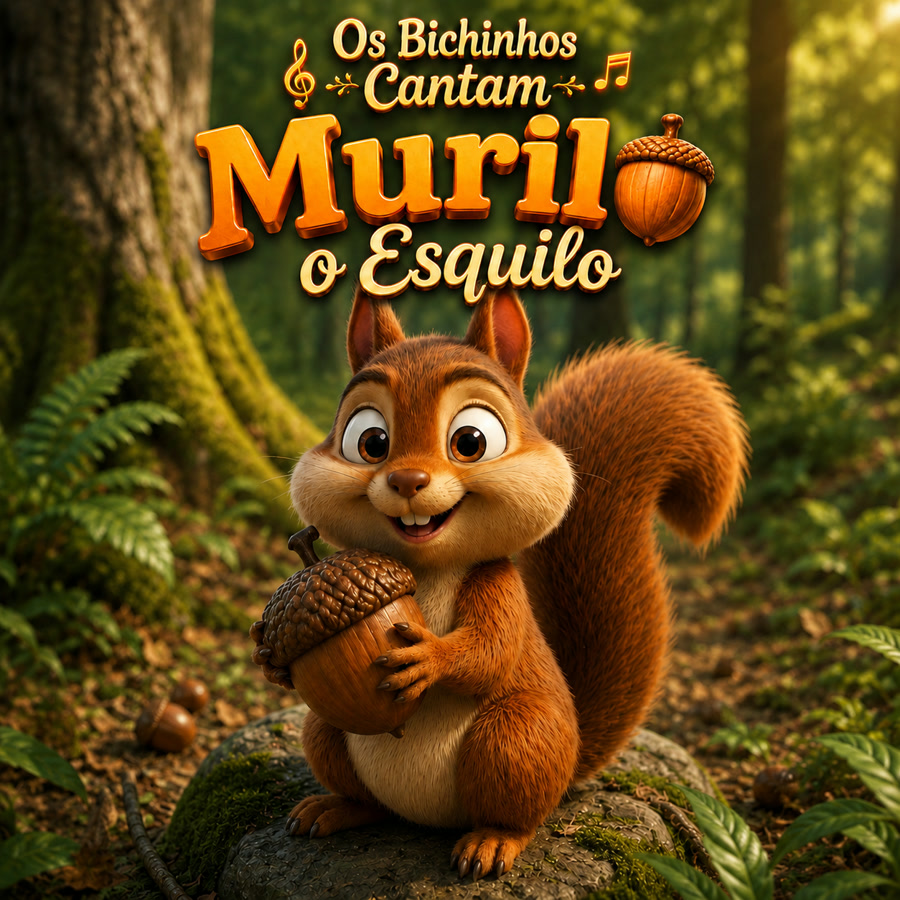
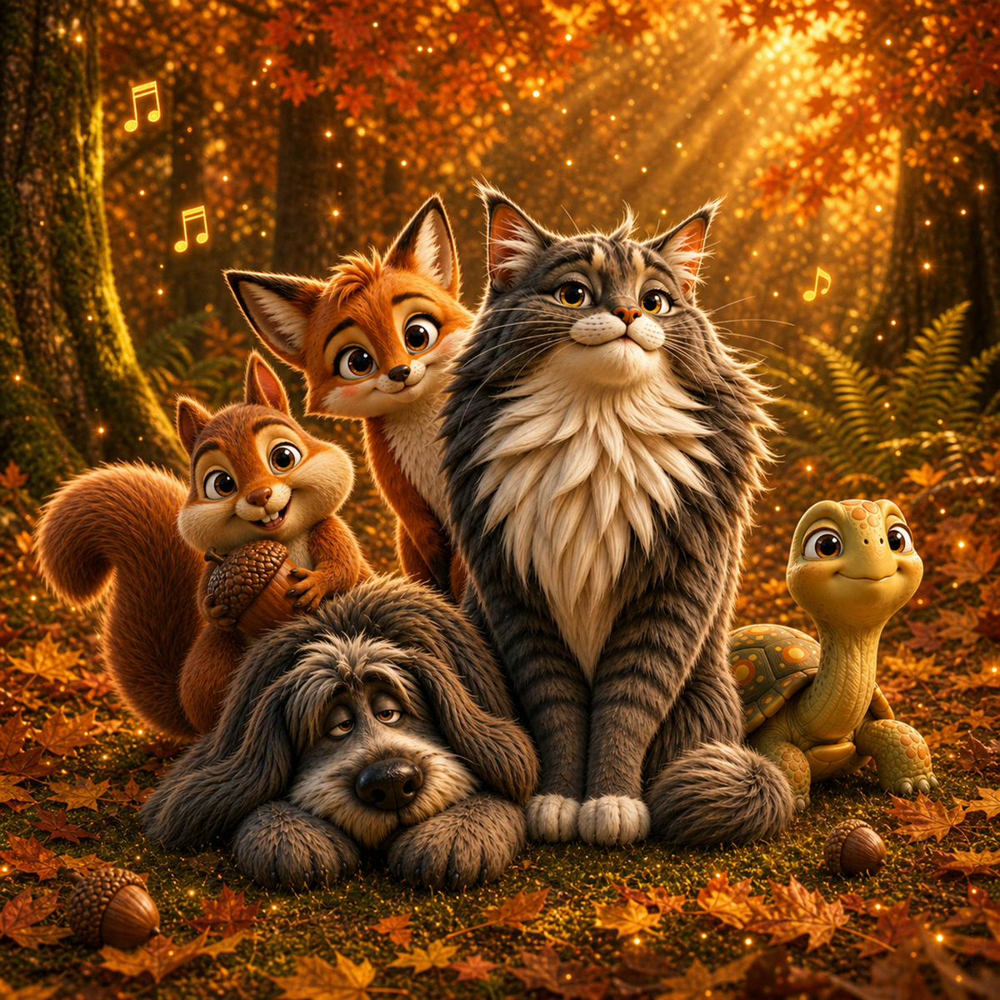

Murilo
O esquilo atrapalhado que nunca lembra onde guardou a castanha.
Ouvir no SpotifyMúsica infantil brasileira
Canções mágicas, lúdicas e familiares - um universo musical acolhedor para crianças de 2 a 5 anos.
✦ Novo single ✦
O esquilo atrapalhado que nunca lembra onde guardou a castanha.
30 de maio de 2026


✦ Já disponível ✦
Quatro faixas inéditas com a turma que abre o universo.
12 de maio de 2026

Projeto musical infantil
Os Bichinhos Cantam é um projeto brasileiro de música infantil criado para aproximar crianças de personagens carinhosos, histórias simples e canções com atmosfera alegre, segura e familiar.
Conheça a turma
Ouça Murilo, dê play nas prévias e explore a turma.
O esquilo atrapalhado que nunca lembra onde guardou a castanha.
Ouvir no Spotify
O gato rei do apê, cheio de charme, miau e brincadeira.
Ouvir no Spotify
O cão gigante e fofão que só quer carinho e sofá.
Ouvir no Spotify
A tartaruga sem pressa que chega lá devagarinho.
Ouvir no Spotify
A raposa tímida por fora e esperta por dentro.
Ouvir no SpotifyJá estão desenhados, ensaiando os próprios refrões. Acompanhe nas redes para ver cada um chegar a cores.
Para famílias
Letras simples, melodias memoráveis e um universo visual seguro e mágico, ideal para escutar no carro, antes de dormir ou em qualquer momento de afeto entre pais, filhos e avós.
Sobre o projeto
Os Bichinhos Cantam é um projeto autoral de música infantil brasileira criado por Capitulino Jr, médico no Rio Grande do Sul. Nasceu da vontade de oferecer às crianças canções novas, com letras simples em português, melodias memoráveis e personagens próprios, sem repetir clichês do gênero.
O Vol. 1 é um EP de 4 faixas - Edgar, João, Duda e Raquel - no ar desde 12 de maio de 2026. Em 30 de maio chegou Murilo, o Esquilo, primeiro single do Vol. 2. A turma completa tem 13 personagens autorais; os próximos lançamentos vão chegando aos poucos, sempre com o mesmo cuidado de composição, identidade visual e foco na escuta de crianças de 2 a 5 anos e de suas famílias.
Links oficiais
Murilo e Vol. 1 no Spotify, mais YouTube, Instagram e demais páginas oficiais.